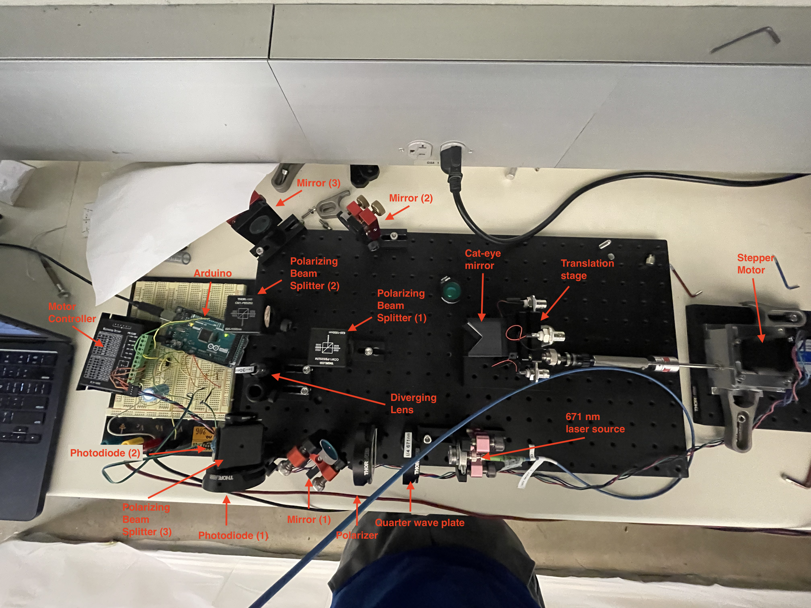

Abstract
Accurate temporal control is critical in atomic physics for characterizing transitions in Rydberg states, such as those in Lithium atoms. This project details the construction and characterization of a Michelson-style interferometer designed to control the optical path difference between two laser pulses, effectively serving as a high-precision delay line for pump-probe experiments. A single laser source is split into two independent arms, where one arm's path length is modulated via a cat-eye mirror assembly mounted on a high-resolution translation stage. By utilizing a stepper motor with a 40:1 worm gear reduction, sub-micrometer positional control was achieved. The resulting interference patterns were analyzed in the frequency domain using Fast Fourier Transforms (FFT) and Short-Time Fourier Transforms (STFT) to characterize mechanical stability and verify the relationship between stepping rates and fringe frequencies. This setup provides a robust prototype for future experiments requiring attosecond-to-picosecond time-delay resolution
Objective
- To design and build a Michelson interferometer capable of precise optical path length modulation.
- To characterize the relationship between mechanical translation and the resulting interference fringe frequency.
- To establish a stable prototype for controlling the time delay (δt) between pump and probe pulses in atomic Rydberg state transitions.
Methodology
Optical Configuration:
- Constructed a Michelson-style interferometer using a 671 nm laser source.
- Implemented a polarizing beam splitter to divide the initial beam into two orthogonal arms.
- Utilized "cat-eye" mirror setups—consisting of a lens and a mirror—to ensure the reflected beams remained parallel to the incident beams, significantly reducing sensitivity to mechanical misalignment.
- Used quarter-wave plates in each arm to rotate the polarization, allowing the beams to recombine and interfere at a final detector.
Mechanical Control System:
- Mounted one arm on a linear translation stage driven by a NEMA 17 stepper motor.
- Integrated a 40:1 worm gear reduction system to convert the motor's rotational steps into fine linear movement.
- Controlled the motor via an Arduino, programmed to move the stage in discrete steps followed by a "settling" delay to mitigate mechanical vibrations.
Signal Acquisition and Processing:
- Captured interference patterns using a photodiode to measure intensity variations as the path length changed.
- Developed a normalization circuit using a second photodiode to account for fluctuations in the laser's initial power or polarization drift.
- Processed the voltage signals using Python, performing FFT to identify the dominant fringe frequency and STFT to monitor frequency stability over time.

Results and Discussion
- Observed clear, high-contrast interference fringes during continuous stage movement.
- FFT analysis identified a dominant fringe frequency of 1.358 Hz for a given stepping rate.
- Comparison with the theoretical expected frequency (1.247 Hz) revealed an 11.1% error, which was attributed to mechanical backlashes and vibrations in the non-rigid motor mounting.
- Short-Time Fourier Transform (STFT) plots confirmed that the fringe frequency remained consistent throughout the scan, though mechanical "ringing" was visible immediately after each motor step.
Conclusion
- The interferometer successfully demonstrated the ability to modulate optical path differences with high precision.
- The integration of FFT-based analysis provided a powerful tool for characterizing the mechanical performance of the translation system.
- Future iterations will focus on improving the rigidity of the motor mount and implementing closed-loop feedback to eliminate the observed 11% frequency error.